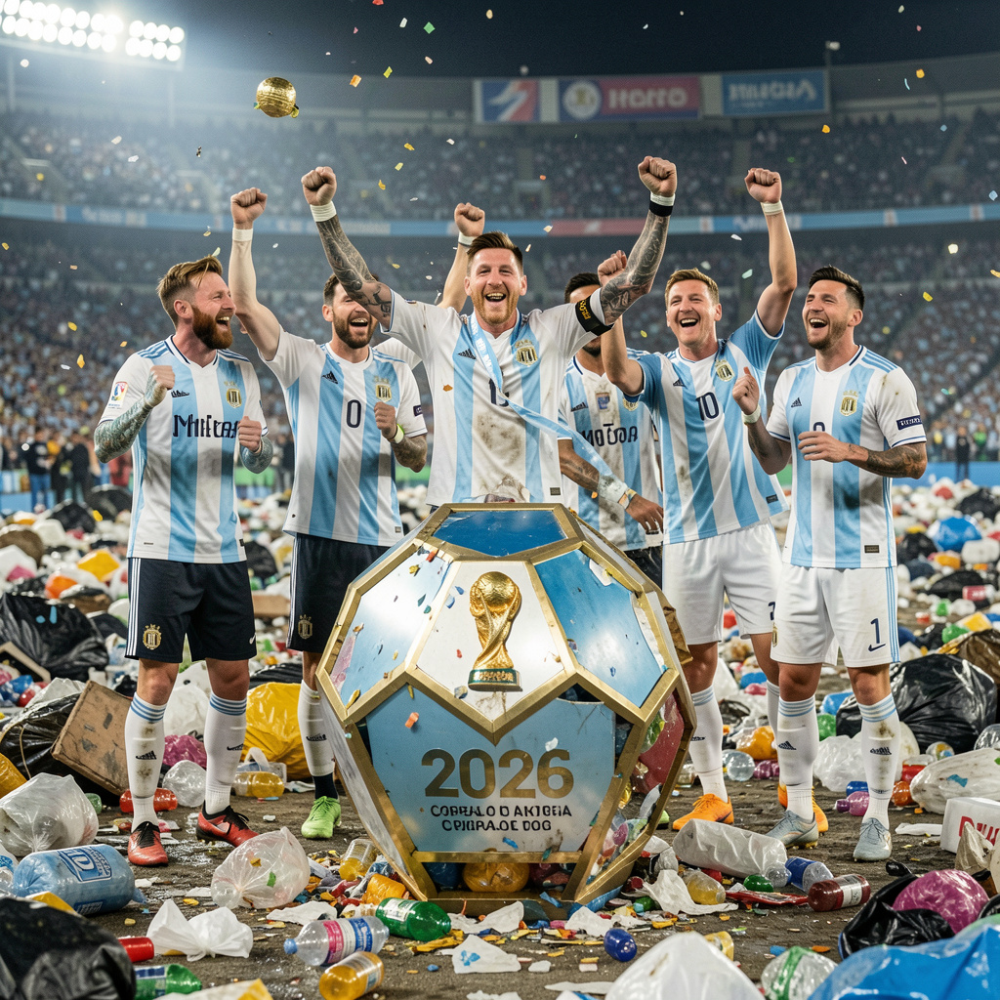

resultados copa do mundo
Por: Ana Júlia e Anna Clara
URGENTE!!!!!!!! A seleção da Argentina é ganhadora da copa do mundo 2026 e para comemorar a vitória arremessam a taça no lixo Após o jogo final de Argentina x Portugal a seleção da Argentina ganha de 8 x 0 em cima da seleção de Portugal e para comemorar o jogador Lionel Messi usuario da camisa 10 arremessa a taça no lixo! .